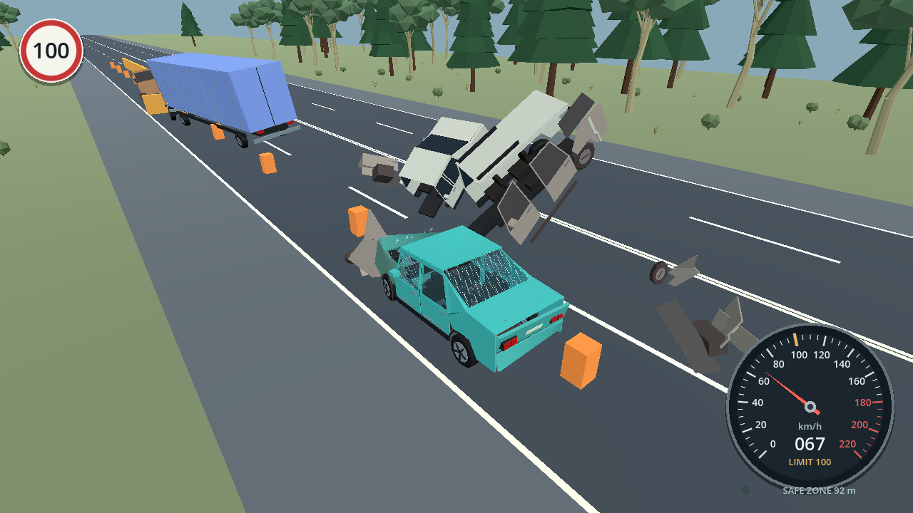
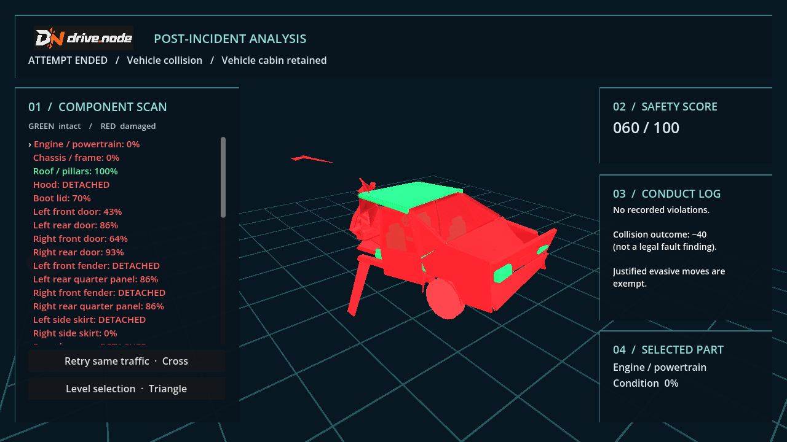

PAID WINDOWS GAME
drive.node
You take control shortly before a road incident. Read what is happening around you, avoid the hazards and bring your car safely into the marked pullover zone. The journey can end in a close escape or a crash worth inspecting.
See drive.node on itch.io


What you do
Drive through traffic scenarios, react to vehicles in trouble and decide where to steer or brake. After an incident, you can watch the aftermath and inspect major damaged parts in a technical car display.
Windows edition
This is the paid Windows version of drive.node. It is an early access game with keyboard and controller support. Check the itch.io page for the current price, release contents and installation instructions.